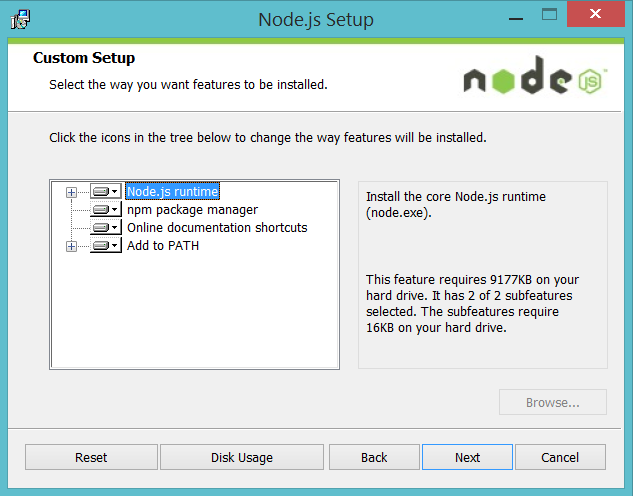
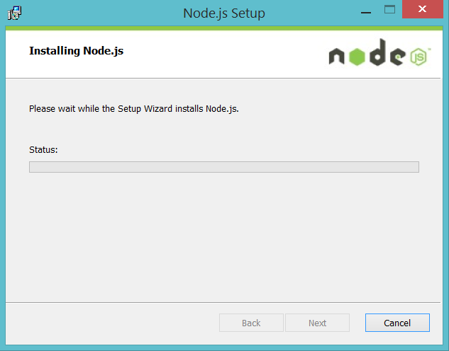
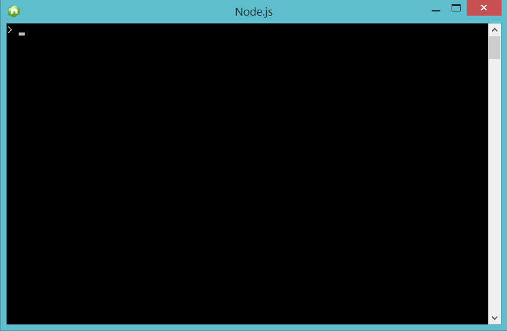
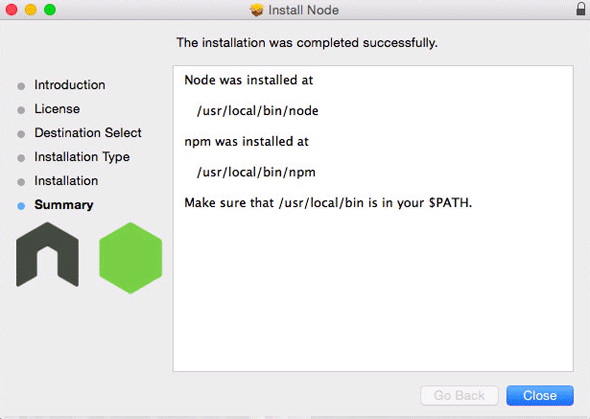
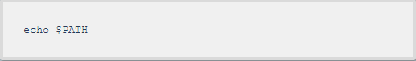
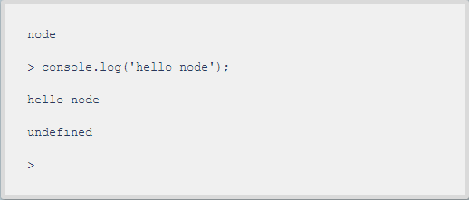

Before Begining
Since, Node.js is JavaScript runtime engine, the knowledge of JavaScript Language is important to program in Node.js Environment. We recommend you to study "Eloquent Javascript" book to learn JavaScript.
Since, Node.js is JavaScript runtime engine, the knowledge of JavaScript Language is important to program in Node.js Environment. We recommend you to study "Eloquent Javascript" book to learn JavaScript.
Current version: v0.12.4
Step 1: Download node-v0.12.4-(x86/x64).msi file.
Step 2: Install it.
Step 3: Open node.exe
Select the package you want to install.
Install the package.
After installing check if it is up and running the command line node application.
To exit the node.js session just hit ‘control’ + ‘c’ twice.
Step 1: Download node-v0.12.4-darwin-(x86/x64).tar.gz file.
Step 2: Install it.
Install the package
At the end of the installation process you are prompted to make sure that /usr/local/bin is in your path, double check to see you have it by running in the Terminal:
After installing, check if it is running by entering the give code in command line node which will open the node JavaScript session:
To exit the node.js session just hit ‘control’ + ‘c’ twice.
Method 1: Download the 32-bit or 64-bit file and install it.
ruby -e "$(curl -fsSL https://raw.githubusercontent.com/Homebrew/linuxbrew/go/install)" brew install node
Method 2: You can also install node.js from terminal:
a) First, install Linux brew by running this command in the terminal:
b) Then, install node.js by running the following command in the terminal: